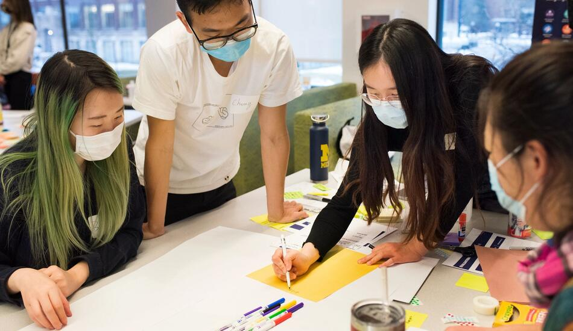
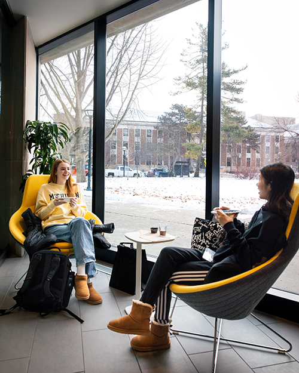
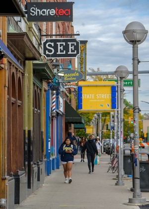

UMSI Student Life’s mission is to enrich each UMSI student’s experience while cultivating an inclusive and welcoming community at the school. We are committed to enhancing student educational experiences through programs, services, and opportunities that develop skills and foster a positive and accessible environment for all UMSI students starting with orientation through graduation. While considering multiple aspects of the student experience, Student Life strives to engage every student across UMSI’s academic programs through its pillars of student leadership, community, well-being and campus life.
Student Organizations
There are a variety of student organizations at UMSI. Student organizations are a great way to learn new skills, meet other students and get involved in the broader U-M and Ann Arbor community.
Sponsored student organizations
Doctoral Student Organization (DSO)
The DSO is an organization that includes all School of Information (SI) doctoral students. The mission of the DSO is to provide both academic and social support to all SI doctoral students. Email: si-dec@umich.edu
Health Informatics Student Organization (HISO)
The Health Informatics Student Organization (HISO) serves as a forum for cohort-building activities, professional skills development, networking and student-led projects within the Master of Health Informatics program. HISO exists to also strengthen our relationships with the University of Michigan School of Information and School of Public Health communities. Email: hiso-board@umich.edu.
Master of Applied Data Science Association (MADSA)
MADSA was established to serve the unique needs of Master of Applied Data Science (MADS) students by providing students with: representation and a formal mechanism for communication with the School of Information and University of Michigan; networking and social opportunities to bring together students, faculty, staff and alumni in a global community; professional development, life-long learning, and alumni connections support; and an inclusive space that strives to promote an equal and diverse representation of the MADS student body in a collaborative manner that is open and transparent. MADSA strives to push for the inclusion of the MADS program within UMSI, advocating for remote access to all learning opportunities for MADS students across all regions and time zones. Email: madsaofficers@umich.edu
Voluntary student organizations
American Library Association (ALA)
The mission of the American Library Association Student Chapter is to promote awareness of, interest in and involvement in libraries, librarianship and information services among all students at the University of Michigan School of Information. To achieve our mission, we will create a space for discussing relevant issues, provide opportunities for professional development and encourage participation in the University of Michigan community and beyond. Email: alaofficers@umich.edu
Atlas Digital Consulting Group
Technology is expanding faster than ever. In today’s increasingly tech-oriented world, keeping up to date with the latest innovations and technologies in the industry is a necessity towards a business’s success. Our organization caters to this need by providing clients with the latest technological solutions. Our talented team of consultants based in the University of Michigan provides a wide range of pro-bono services in full-stack development ranging from web development to machine learning solutions. By doing our work free of charge, not only are we able to help local businesses and make a positive impact within our community, but we are also able to further develop our technical and soft skills, improving ourselves as students. Email: ad-eboard@umich.edu
Black@SI
Black@SI is an academic and social support network that serves Black students, alumni and accomplices of the University of Michigan School of Information (UMSI). Through our programming, we help ensure that underrepresented students can successfully contribute to both scientific research and the college’s learning environment, and positively impact our communities. Email: blackatsiorganizers@gmail.com
Health and Wellness
We value wellness and understand the importance of students maintaining their physical and mental health throughout their time at UMSI. There are many campus and community resources available to support your overall well-being.
School of Information Embedded Psychologist
UMSI has an embedded CAPS Psychologist, Ashley Evearitt (evearitt@umich.edu), who is available to current UMSI students. More information about how to schedule an appointment with Ashley can be found using this link.
U-M Counseling and Psychological Services (CAPS)
CAPS’ mental health services support students — no matter where they are — during these difficult times. These services include:
- Tele-counseling and virtual appointments
- Outreach, prevention and engagement programs
- Crisis support
- Identifying mental health resources in student’s individual communities
Life in Ann Arbor
General Resources
A number of websites provide information about life at U-M and in Ann Arbor. Helpful places to start:
Housing
The many options for housing both on and off campus range from co-ops to rooms in houses to freestanding apartments.
Entertainment
Ann Arbor is a vibrant college town with many restaurants, musical venues, museums, bars and theaters to explore. To stay current on the happenings about town, you can find a lot of information at ArborWeb.com and the Ann Arbor Visitors Bureau. In addition to these resources, check out: